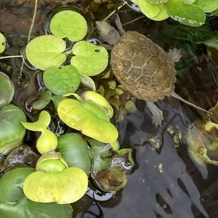
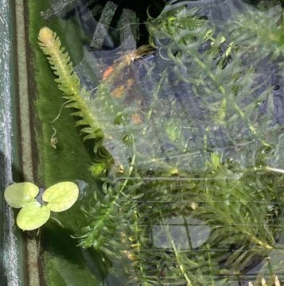
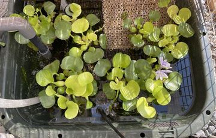
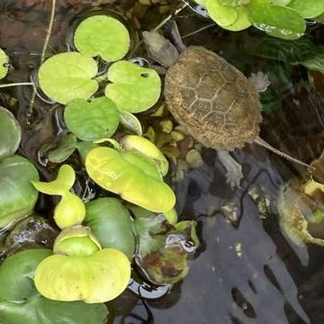
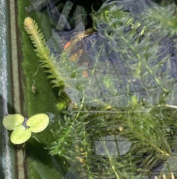
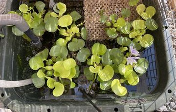

水草
水質維持のため、また日よけ・隠れ家・メダカの産卵場所・イシガメが掴まって休憩する場所として水草を入れる。 ヌマエビが農薬に弱いため水草は無農薬のもの。
ミニホテイアオイ、ドワーフアマゾンフロッグピット、アナカリス。


- 栄養豊富だからと思うが、いずれもかなりの勢いで増えるので、定期的に間引く必要がある。
2023年は（ミニではない普通の）ホテイアオイを入れたら増えすぎて、水中を占有するほど伸びる根を切るのが大変だった。

水質維持のため、また日よけ・隠れ家・メダカの産卵場所・イシガメが掴まって休憩する場所として水草を入れる。 ヌマエビが農薬に弱いため水草は無農薬のもの。
ミニホテイアオイ、ドワーフアマゾンフロッグピット、アナカリス。


2023年は（ミニではない普通の）ホテイアオイを入れたら増えすぎて、水中を占有するほど伸びる根を切るのが大変だった。
